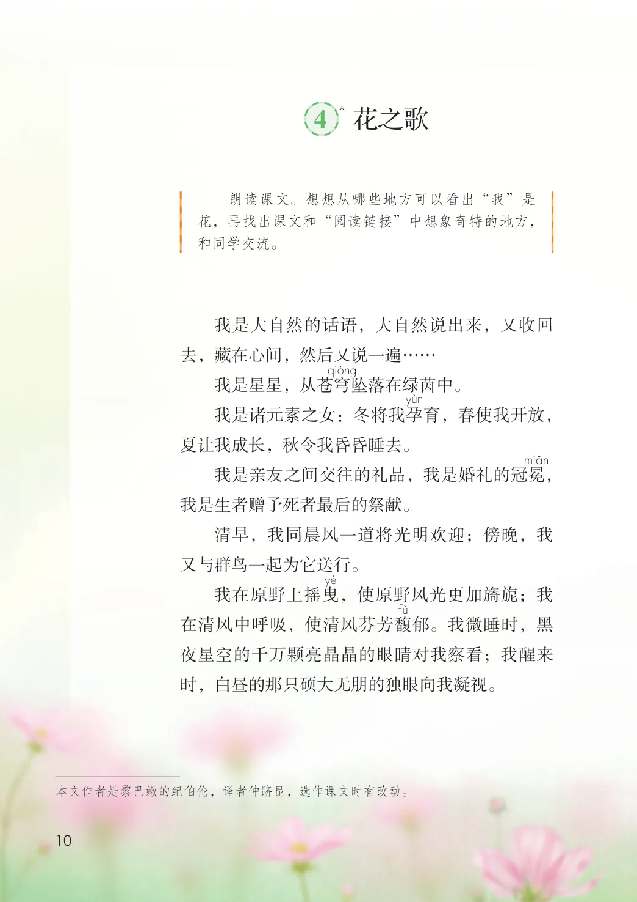
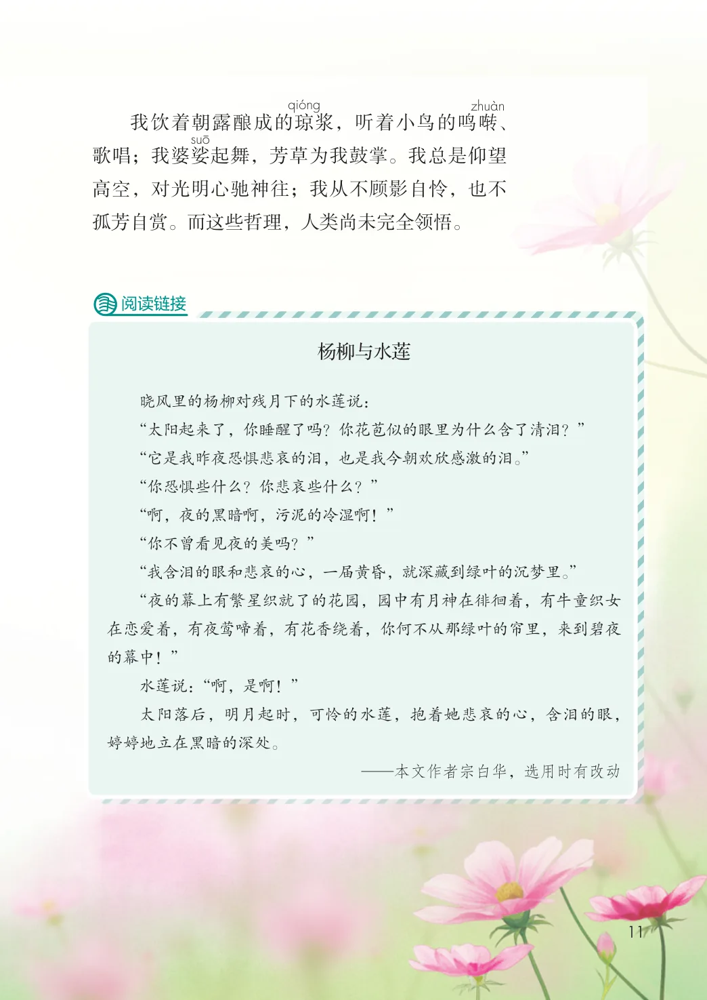

第一单元 · 第 4 课
花之歌
课后练习
- 朗读课文。想想从哪些地方可以看出“我”是花，再找出课文和“阅读链接”中想象奇特的地方，和同学交流。我是大自然的话语，大自然说出来，又收回去，藏在心间，然后又说一遍……我是星星，从苍穹坠落在绿茵中。我是诸元素之女：冬将我孕育，春使我开放，夏让我成长，秋令我昏昏睡去。我是亲友之间交往的礼品，我是婚礼的冠冕，我是生者赠予死者最后的祭献。清早，我同晨风一道将光明欢迎；傍晚，我又与群鸟一起为它送行。我在原野上摇曳，使原野风光更加旖旎；我在清风中呼吸，使清风芬芳馥郁。我微睡时，黑夜星空的千万颗亮晶晶的眼睛对我察看；我醒来时，白昼的那只硕大无朋的独眼向我凝视。
文字内容 PDF 第 16 页
我饮着朝露酿成的琼浆，听着小鸟的鸣啭、歌唱；我婆娑起舞，芳草为我鼓掌。我总是仰望高空，对光明心驰神往；我从不顾影自怜，也不孤芳自赏。而这些哲理，人类尚未完全领悟。
阅读链接
杨柳与水莲
晓风里的杨柳对残月下的水莲说：
“太阳起来了，你睡醒了吗？你花苞似的眼里为什么含了清泪？”
“它是我昨夜恐惧悲哀的泪，也是我今朝欢欣感激的泪。”
“你恐惧些什么？你悲哀些什么？”
“啊，夜的黑暗啊，污泥的冷湿啊！”
“你不曾看见夜的美吗？”
“我含泪的眼和悲哀的心，一届黄昏，就深藏到绿叶的沉梦里。”
“夜的幕上有繁星织就了的花园，园中有月神在徘徊着，有牛童织女
在恋爱着，有夜莺啼着，有花香绕着，你何不从那绿叶的帘里，来到碧夜
的幕中！”
水莲说：“啊，是啊！”
太阳落后，明月起时，可怜的水莲，抱着她悲哀的心，含泪的眼，
婷婷地立在黑暗的深处。
—本文作者宗白华，选用时有改动
原版对照
原书页面与全部插图
点击图片可查看大图。

